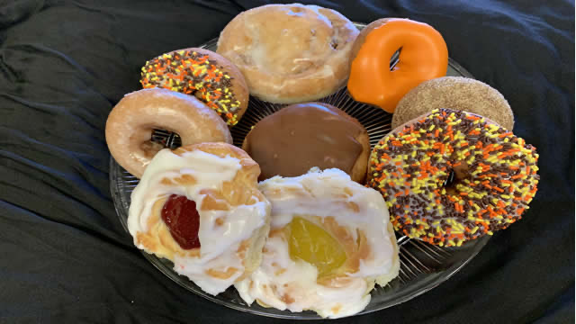
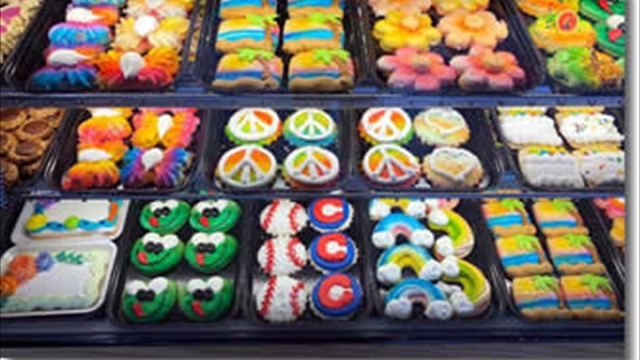
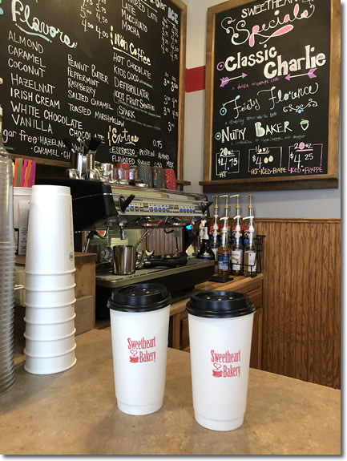
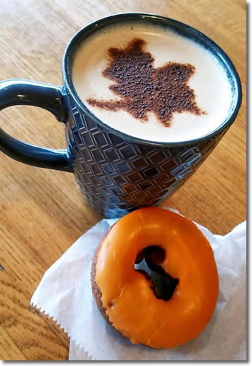
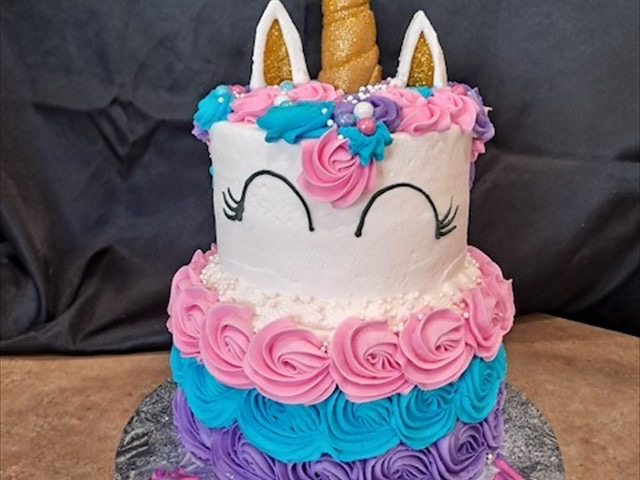
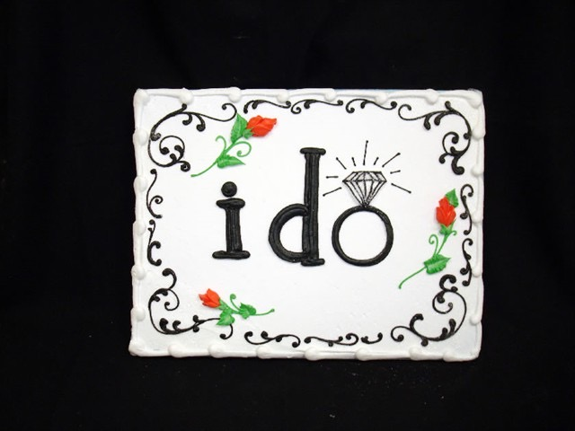
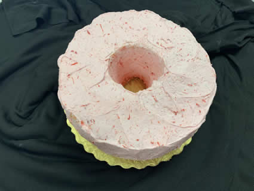
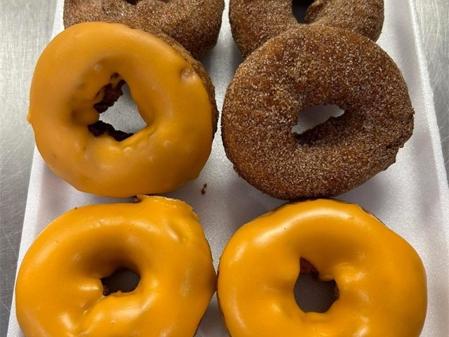

Breakfast
Donuts, long johns & bismarks
Raised and cake donuts, long johns, danish, bismarks, turnovers, scones, cinnamon rolls, donut holes and coffee cakes.
See breakfast goodiesSweetheart Bakery is a third generation family owned bakery, started in 1950 by Charlie and Florence Thornton. Our breads and buns still come from Grandpa’s recipes, and Homer’s Deli, in the same building, makes your sandwich on them.

Breakfast goodies made from Grandpa’s recipes and a touch of love. Need a dozen or more? Call ahead and we will have them ready.

Raised and cake donuts, long johns, danish, bismarks, turnovers, scones, cinnamon rolls, donut holes and coffee cakes.
See breakfast goodies
White, wheat, rye and Charlie’s Rye, plus hamburger and brat buns by the eight and dinner rolls by the dozen.
See all breads
Made with real butter from Grandpa’s 1950 recipe, for any holiday, team, shower or even your company logo.
Cookies & pies
You don’t have to wait for Saint Patrick’s Day. Blarnies are in the case each and every day of the year.
Home-made, cut into generous squares
Frosted with our home-made icing
Rolled in ground salted peanuts
Hot, iced or frappe, made to order with freshly ground beans and our espresso machine. Not a coffee person? Try a Spark, a smoothie, hot cocoa, or the Defibrillator, our energy drink.


Full-muscled meats, Wisconsin cheeses, Sweetheart Bakery breads and buns, and a variety of fresh toppings. Call ahead so you don’t have to wait in line.
A Reuben on homemade dark rye, the Mad Russian, Homer’s Sub, BBQ pulled pork from pork we smoke ourselves, or any sandwich made your way.
Chicken noodle with our own homemade noodles, potato bacon, cheese broccoli with three Wisconsin cheeses, goulash and chili. By the cup, bowl, pint, quart or gallon.
Pasta salad with our secret creamy sweet dressing, potato salad made with local potatoes, and pea salad, sold by the pound.
Every cake is made for you from scratch: white, chocolate or marble iced in our homemade butter cream, or cherry, lemon, raspberry and seasonal flavors. We can even print your photo on it.




Sweetheart Bakery in Clinton is your one stop place for all of your “sweet-tooth” needs: fresh breads, pastries, donuts, cinnamon rolls, cookies, and yes… even caramel apples when in season. Some of what we bake ships all over the world.

Charlie and Florence Thornton start Sweetheart Bakery in Clinton, Iowa.
Homemade buns and bread, decorated cut-out cookies with real butter, and breakfast goodies, still baked from Grandpa’s recipes.
The frosted, peanut-rolled cake squares have been a Sweetheart tradition since 1950.
Sandwiches, soups and salads made in the same building, on our own breads and buns.
Lattes named after the grandparents: Classic Charlie, Feisty Florence and the Nutty Baker.
A third generation family owned business on Main Avenue in Clinton.
Yes. We package our Blarnies and send them anywhere in the country. Call (563) 242-4105 to place your order.
Call us to place an advance order of a dozen or more, so you get everything you want.
Yes. Bring a printed picture to the bakery or bring a digital image on a flash drive, and we can print it on your cake.
We keep a gluten free bread in our freezer for customers with a gluten allergy. Ask for it at the counter. Homer’s Deli also offers gluten free bread for sandwiches.
On Wednesdays you get a free donut with the purchase of any specialty drink from our coffee bar.
The bakery and Homer’s Deli are both closed on Sunday. The bakery hours are Tuesday to Friday 6 am to 6 pm and Saturday 6 am to 2 pm. The deli is open Monday to Friday 8 am to 7 pm and Saturday 8 am to 2 pm.
| Monday | Deli 8 am–7 pm · Bakery closed |
| Tuesday | 6 am–6 pm · Deli 8–7 |
| Wednesday | 6 am–6 pm · Deli 8–7 |
| Thursday | 6 am–6 pm · Deli 8–7 |
| Friday | 6 am–6 pm · Deli 8–7 |
| Saturday | 6 am–2 pm · Deli 8–2 |
| Sunday | Closed |
We accept cash, credit or debit cards (a credit card fee applies). Gift cards are available.
For anything with a date, like cakes or a dozen-plus order, calling is best. This form opens an email to the bakery.